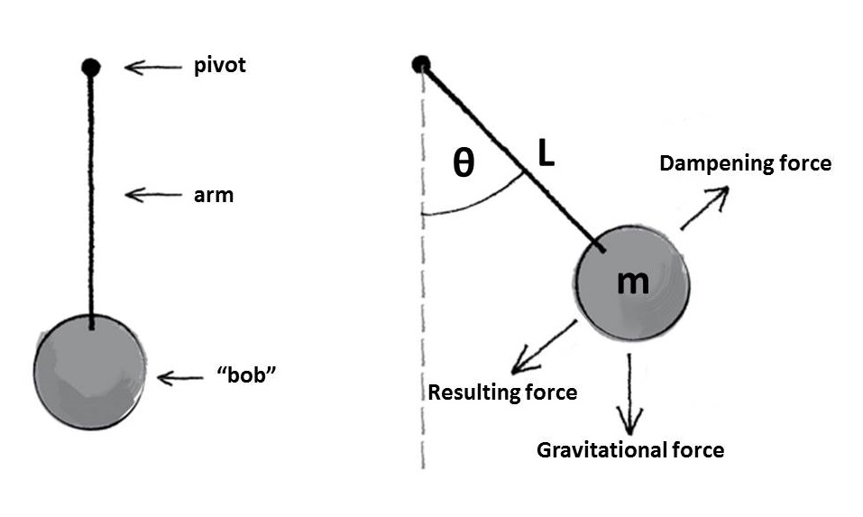

This blog post came about after watching a youtube video of Newton's Cradle in a research group meeting. My research group is a made up of cloud modellers. Some of us work with small one dimensional cloud models investigating how water and ice content vary in time, while others use larger scale three dimensional models, which also include the spatial developments of cloud structures. The enjoyment we gain from solving problems is one thing we all have in common. I guess that is the ultimate drive for any researcher. The problem Matt asked us this particular week was "Can we model Newton's Cradle?".
To save this post from becoming an essay, I've broken the problem down into three seperate blogs. The first part is focused on defining the problem, second part is solving the problem and the final part is the modelling. First things first, let's define the problem.
Defining the problem
The only way to start any problem is with a daigram that contains all the forces we know that are acting on the pendulum system.

Each "bob" follows Newton's second law of motion where external forces acting upon an object are proprtional to the product of mass and acceleration. The forces that we need to consider acting upon the ball bearing are gravity and a frictional damping force. Combining these forces, gives us the equation for simple harmonic motion,

where m is the mass of the bob, g the gravitational constant and b a constant parameter defining the dampening effect. The equation has been written in a spherical coordinate system as the orientation of problem means that the bob will have a constant radial distant from the centre of the problem and only the angle the arm makes with the vertical is needed to describe any change in position.
Finally the boundary and initial conditions must be defined in order to solve this problem for the specific situation of Newton's cradle. Initially, the ball bearings are displaced and released from and angle θ0 with an initial angular velocity of θ̇0. This can be written,

and so the problem has been defined. The next blog will solve this problem and just as a warning, there's quite a bit a maths.